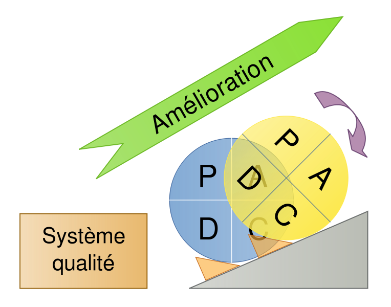
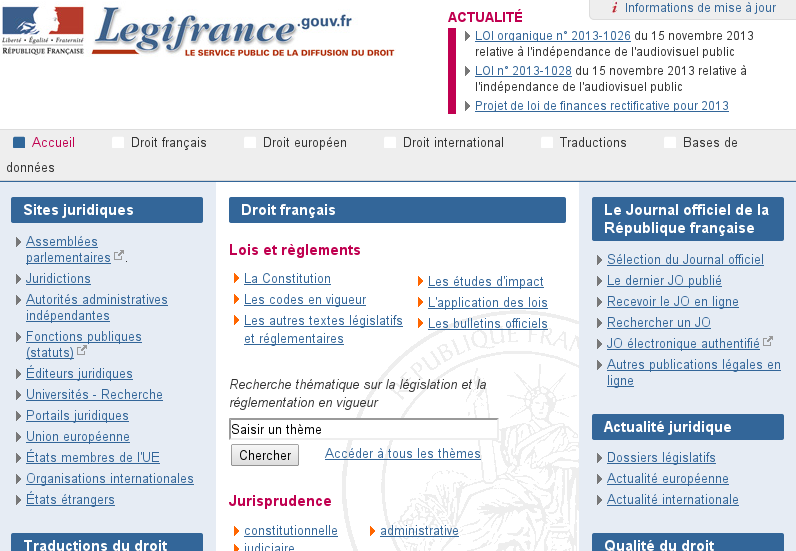
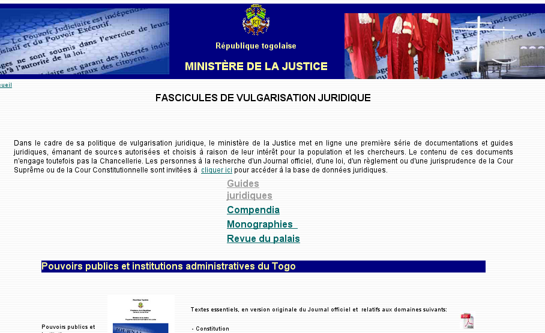
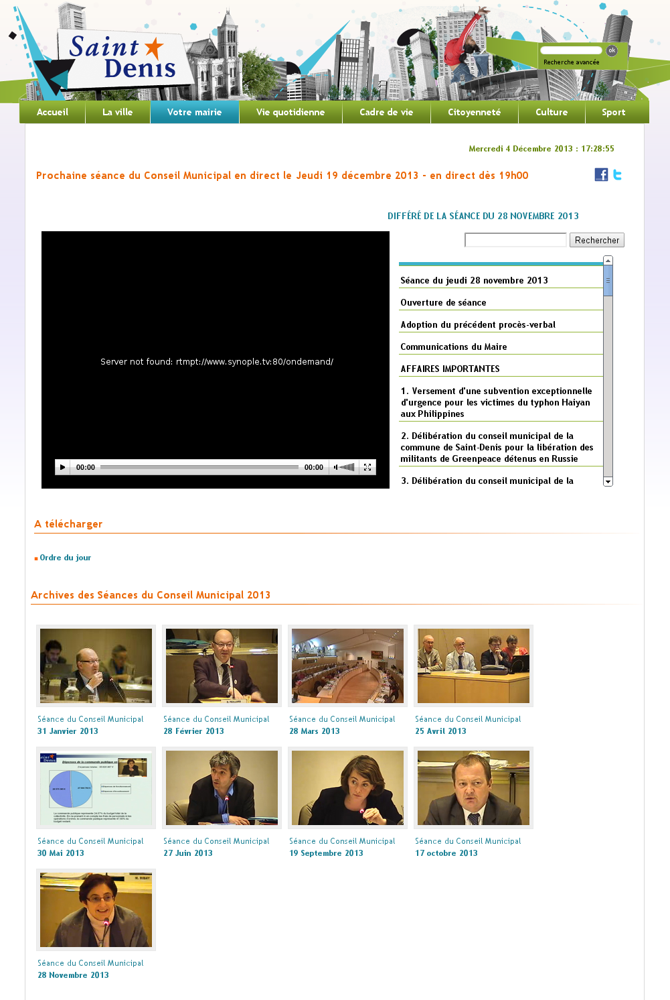
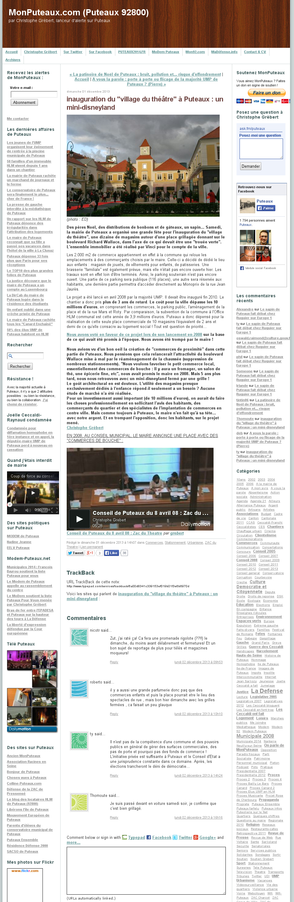
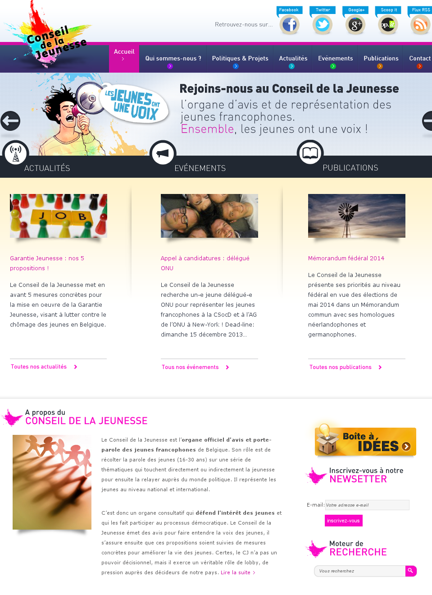
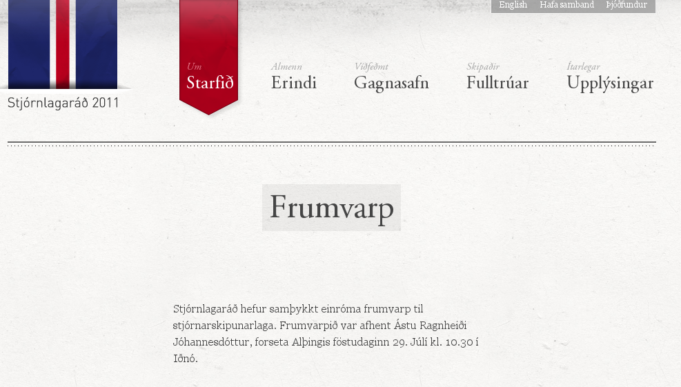

Les outils numériques pour le débat public
Par Fabien Poulard / @grdscarabe / Dictanova
4 décembre 2013 -- Conseil de développement de Nantes métropole
Débat public ?
La loi L.95-101 du 2 février 1995 [...] prévoit l’association et la participation du public à «l’élaboration des projets d’aménagement ou d’équipement ayant une incidence importante sur l’environnement ou sur l’aménagement du territoire»
Wikipedia
Débat public ?
Le débat public doit permettre :- D’informer le public sur l’opportunité, les caractéristiques et objectifs du projet
- D’assurer l’expression la plus large possible du public à l’aide de différents supports
- D’éclairer le maître d’ouvrage par de nouveaux éléments d’appréciations
Wikipedia
Débat public = Démocratie ouverte ?
Débat public ∈ Démocratie ouverte
La démocratie ouverte passe notamment par
- La concertation = organisation de débats publics
- La consultation des citoyens : critique, avis, idées
- La pédagogie
Si on devait tenter un parallèle...
| Débat public | vs. | Démocratie ouverte |
|---|---|---|
| Informer le public | Pédagogie | |
| Assurer l’expression du public | Consultation | |
| Éclairer le maître d’ouvrage | Résultat de la consultation | |
| Débat public | Concertation |
Définition cyclique !
Mise en abîme : Internet

Gouvernance d'Internet
Parties prenantes :
- Volumineuses
- Variées
- Valeurs des contributions différentes
3V du Big Data => Big Collegia par certains aspects
Gouvernance d'Internet
Débat ouvert pluripartie
- Réunions : informer et assurer l'expression du public
- Documents partagés via Internet : assurer l'expression du public
- Forums publics : informer et assurer l'expression du public
- Publications : éclairer le maître d'ouvrage
- ...
Débouche sur des politiques et des normes sur la base desquels seront construits les services.
Gouvernance d'Internet
Un processus itératif :
les politiques et les normes guident les débats et la prise de décisions
Plongeon(s) dans l'expérimentation !
- Informer le public
- Assurer l’expression du public
- Éclairer le maître d’ouvrage
Informer le public
Exemple : Légifrance et EUR-Lex
- Objectif : permettre l'accès au droit
- Légifrance à l'échelle de l'État français
- EUR-Lex à l'échelle Européenne
|  |
Information ? Pas accessible à tous !
Contre-exemple
|
|

|
(Tentative de) Vulgarisation
Exemple : Conseils municipaux de la ville de Saint-Denis
Exemple : Conseils municipaux de la ville de Saint-Denis
- Chaque séance est diffusée en direct
- Archives disponibles en ligne
- Synchronisatino avec l'ordre du jour en parallèle
Exemple complémentaire : MonPuteaux
Exemple complémentaire : MonPuteaux
- Blog citoyen à l'origine
- Politisation au fur et à mesure
Chat géant de Barack Obama
Chat géant de Barack Obama
- 92 900 Américains ont participé
- 104 130 questions posées
- 36 heures pour communiquer leurs interrogations par courriel
- Transcript complet en ligne
Assurer l’expression du public
Exemple : Conseil de la Jeunesse
Exemple : Conseil de la Jeunesse
- Boîte à idées
- Publications
La constitution de l'Islande
La constitution de l'Islande
- Élection d'un conseil constitutionnel de 25 membres
- Diffusion vidéo des réunions (streaming), notamment sur Facebook
- Élaboration de la constitution sur un site public ouvert aux commentaires
- 1.600 propositions et commentaires recueillies
La constitution de l'Islande
Outils